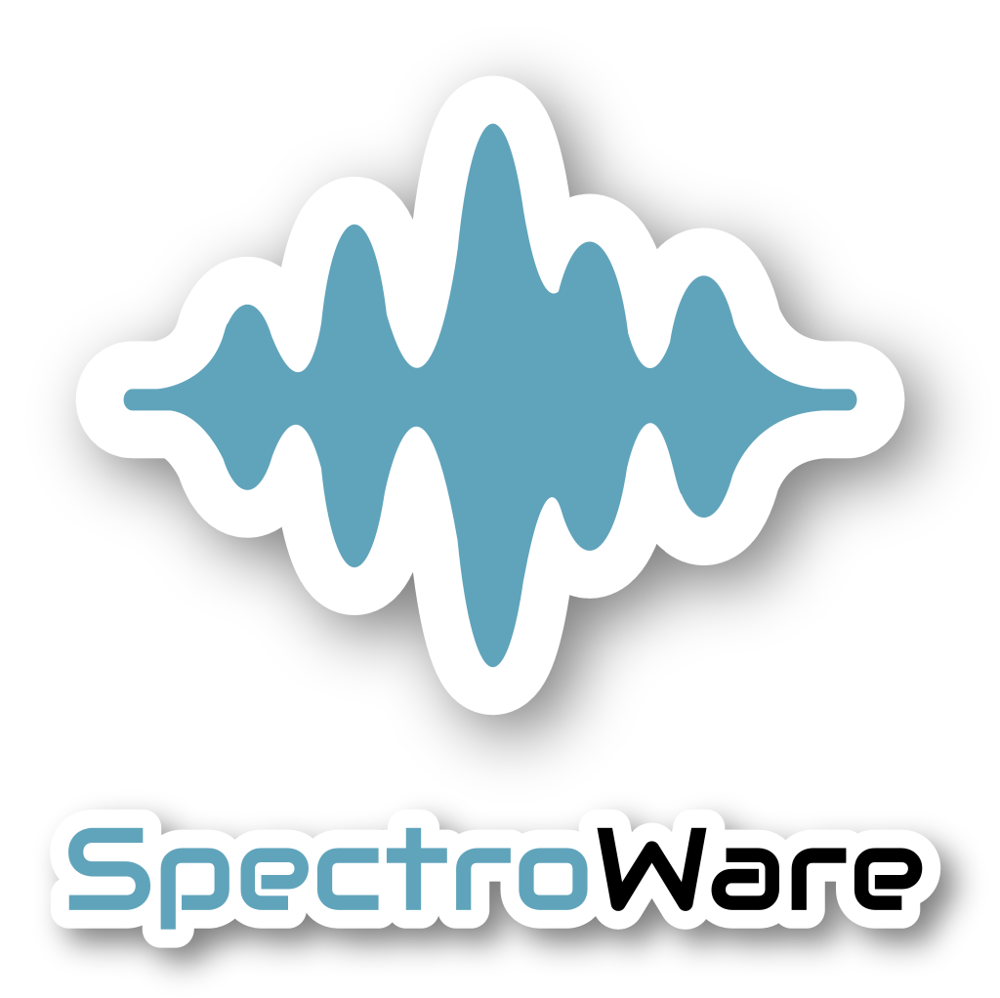
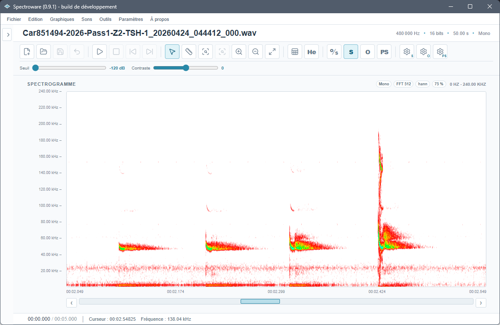
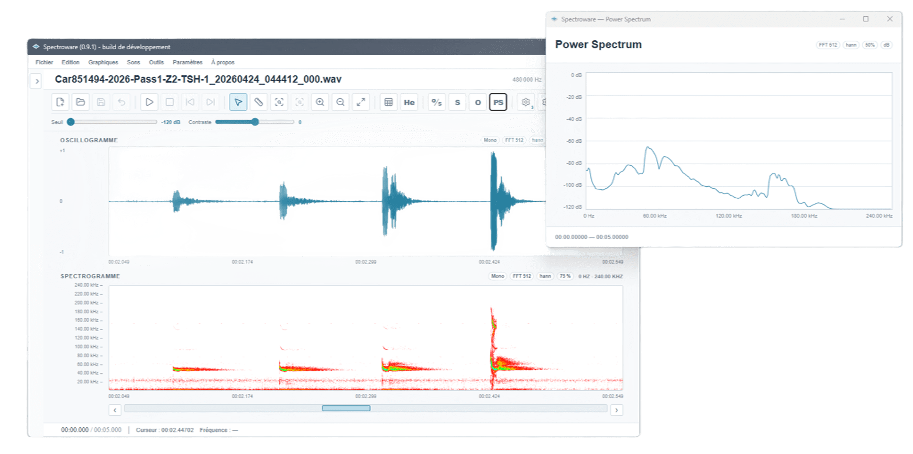
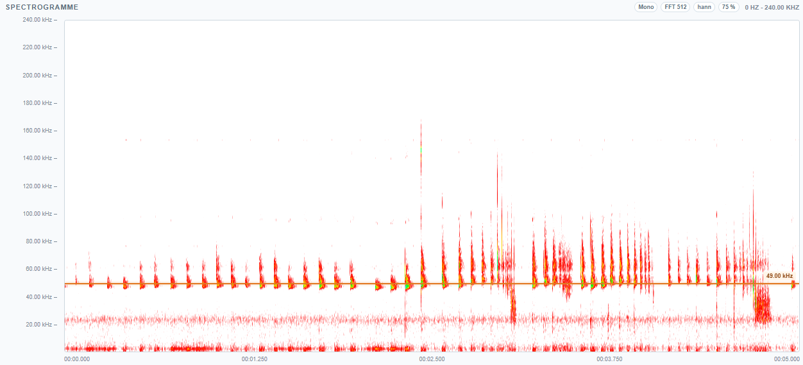
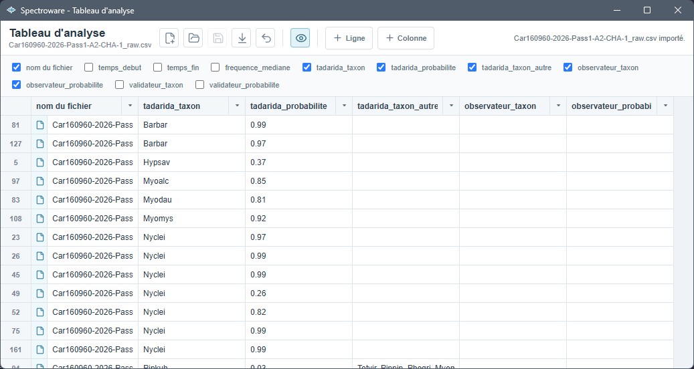

Spectroware : logiciel pour la visualisation, l'écoute et la mesure de signaux acoustiques

Sortie prévue courant 2026 !
Spectroware est un logiciel local de visualisation, d'écoute, d'édition et de mesure bioacoustique, conçu pour accompagner le travail d'analyse manuelle des signaux acoustiques et ultrasonores. Initialement développé pour l'étude acoustique des chiroptères, il est suffisamment polyvalent pour être utilisé sur les vocalises de mammifères, les chants d'oiseaux ou d'amphibiens, les stridulations d'orthoptères et, plus largement, tout signal sonore nécessitant une analyse précise.

Interface principale de Spectroware avec affichage d'un spectrogramme.
Contexte du projet
En bioacoustique naturaliste, l'analyse des signaux repose encore très souvent sur des outils généralistes, parfois anciens, peu ergonomiques ou mal adaptés aux flux de travail sur de grands volumes de fichiers. L'objectif de Spectroware était donc de développer un outil spécialisé, et fluide, capable de réunir dans une seule interface les principales étapes de l'analyse acoustique : ouvrir, écouter, visualiser, sélectionner, mesurer, éditer et documenter les signaux.
Le logiciel a été conçu autour d'un besoin métier concret, c'est-à-dire faciliter l'analyse manuelle de séquences issues de protocoles naturalistes, de campagnes d'enregistrement ou de fichiers de pré-classification. Il s'adresse aussi bien aux naturalistes réalisant des vérifications ponctuelles qu'aux bioacousticiens manipulant de grands ensembles de données.
Développé entièrement en autodidacte, Spectroware représente l'un de mes projets logiciels les plus ambitieux. Il combine traitement du signal, bioacoustique, mathématiques appliquées et développement d'une application multiplateforme afin de proposer un outil spécifiquement pensé pour les besoins des naturalistes.
Visualisation et métrologie acoustique
Spectroware permet d'afficher simultanément plusieurs représentations complémentaires du signal : le spectrogramme, qui représente l'énergie fréquentielle au cours du temps, l'oscillogramme, qui décrit l'amplitude du signal, et le Power Spectrum, qui permet d'étudier la distribution fréquentielle d'une sélection.
L'analyse repose sur deux outils principaux : un curseur de sélection, utilisé pour isoler une portion du signal, et un curseur de mesure, permettant de relever des coordonnées temporelles et fréquentielles précises. Ces outils permettent de mesurer les durées, les fréquences, les écarts temporels et les largeurs de bande, informations essentielles dans l'identification bioacoustique.

Représentations du spectrogramme, de l'oscillogramme et du Power Spectrum dans Spectroware.
Un outil pensé pour les bioacousticiens
Le logiciel intègre nativement plusieurs fonctionnalités utiles pour l'analyse acoustique des chauves-souris. Les fichiers issus d'expansion temporelle peuvent être interprétés avec un facteur de correction, afin que les axes temporels et fréquentiels correspondent aux valeurs réelles du signal original.
Spectroware propose également un mode hétérodyne virtuel, qui simule le fonctionnement d'un détecteur de chauves-souris. L'utilisateur peut ajuster une fréquence de référence et écouter la bande ultrasonore correspondante tout en conservant l'affichage visuel du spectrogramme. Cette approche permet de relier plus directement l'écoute naturaliste et l'analyse graphique.

Mode hétérodyne virtuel avec fréquence de battement ajustable.
Analyse de grands volumes de fichiers
Une des fonctionnalités importantes de Spectroware est son module tableur intégré. Il permet d'importer un fichier CSV issu d'un logiciel de pré-classification ou d'un tableau d'analyse, puis de le synchroniser avec un répertoire contenant les fichiers audio.
Lorsqu'une colonne contient les noms de fichiers, Spectroware détecte automatiquement les correspondances avec le répertoire ouvert. Il devient alors possible de charger directement une séquence depuis une ligne du tableau, ce qui fluidifie fortement les étapes de vérification, de correction et d'identification.

Module tableur permettant de relier un tableau d'analyse aux fichiers audio du répertoire de travail.
Fonctionnalités principales
- Visualisation synchronisée du spectrogramme, de l'oscillogramme et du spectre de puissance ;
- Mesures temporelles et fréquentielles à l'aide de curseurs dédiés ;
- Gestion des fichiers WAV mono ou stéréo, avec profondeurs de bits usuelles ;
- Correction de l'expansion temporelle pour les fichiers ultrasonores ralentis ;
- Mode hétérodyne virtuel pour l'écoute ciblée des signaux ultrasonores ;
- Module CSV intégré pour relier des tableaux de pré-classification aux fichiers audio ;
- Outils d'édition : couper, copier, coller, supprimer, appliquer du silence, ajuster le gain et filtrer une sélection ;
- Export graphique en PNG, JPEG ou SVG pour produire des figures de rapport ou de présentation.
Développement logiciel
Spectroware est une application desktop autonome, que je développe seul avec une architecture moderne combinant une interface web réactive et des traitements locaux. L'application fonctionne hors ligne après activation et vise une compatibilité avec les principaux systèmes d'exploitation : Windows, macOS et Linux.
Ce projet m'a permis de mobiliser à la fois mes compétences naturalistes, mon expérience en bioacoustique, mes connaissances en traitement du signal et mes compétences de développement logiciel. L'enjeu n'était pas seulement de produire un outil fonctionnel, mais de concevoir une interface adaptée aux gestes réels de l'analyse acoustique : naviguer rapidement entre les fichiers, comparer les signaux, mesurer précisément et réduire les manipulations répétitives.